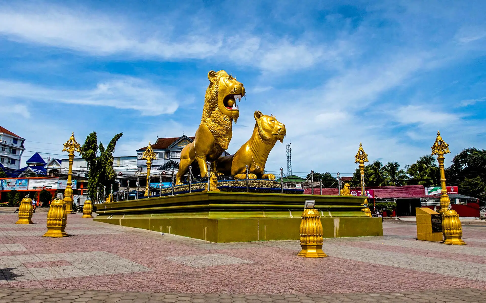

អំពីខេត្តព្រះសីហនុ
ខេត្តព្រះសីហនុ ស្ថិតនៅភាគនិរតីនៃព្រះរាជាណាចក្រកម្ពុជា និងជាខេត្តតែមួយគត់ដែលមានឆ្នេរសមុទ្រធំទូលាយ ជាប់ឈូងសមុទ្រថៃ។ ខេត្តនេះមានកំពង់ផែស្វយ័តអន្តរជាតិ ដែលជាច្រកពាណិជ្ជកម្មដ៏សំខាន់របស់ប្រទេស។ ព្រះសីហនុត្រូវបានគេស្គាល់ថាជាគោលដៅទេសចរណ៍ដ៏ល្បី ដោយសារឆ្នេរខ្សាច់សស្អាត កោះធម្មជាតិ និងទេសភាពសមុទ្រដ៏ទាក់ទាញ។
ប្រវត្តិសង្ខេប
ខេត្តព្រះសីហនុ ត្រូវបានបង្កើតឡើងក្នុងឆ្នាំ១៩៥៨ និងត្រូវបានដាក់ឈ្មោះតាមព្រះនាម ព្រះករុណាព្រះបាទសម្តេចព្រះនរោត្តម សីហនុ។ ខេត្តនេះត្រូវបានអភិវឌ្ឍឡើងដើម្បីបង្កើត កំពង់ផែទឹកជ្រៅដំបូងរបស់កម្ពុជា និងបានក្លាយជាមជ្ឈមណ្ឌលសេដ្ឋកិច្ច ពាណិជ្ជកម្ម និងទេសចរណ៍ដ៏សំខាន់មួយរបស់ប្រទេស។
កន្លែងទេសចរណ៍សំខាន់ៗ
- ឆ្នេរអូរឈើទាល
- ឆ្នេរឯករាជ្យ
- ឆ្នេរសុខា
- កោះរ៉ុង
- កោះរ៉ុងសន្លឹម
- វត្តក្រោម
ទីតាំងភូមិសាស្ត្រ
ខេត្តព្រះសីហនុ ស្ថិតនៅតាមបណ្តោយឆ្នេរសមុទ្រភាគនិរតីនៃប្រទេសកម្ពុជា មានព្រំប្រទល់ជាប់ខេត្តកំពត ខេត្តកោះកុង និងឈូងសមុទ្រថៃ។ ខេត្តនេះមានឆ្នេរសមុទ្រវែង កោះជាច្រើន និងធនធានធម្មជាតិដ៏សម្បូរបែប ដែលជួយជំរុញវិស័យទេសចរណ៍ នេសាទ និងពាណិជ្ជកម្មតាមសមុទ្រ។